The Taskhorse
 |
Audi A6 C6 TDV allroad TDI quattro
|
In August 2021, I finally made the decision to purchase my very own cargo donkey. I say cargo donkey but what I really mean is handsome, elegant GigaChad of and automobile. At 22 years of age, it had taken me a while to commit to the taskhorse lifestyle but after a quiet Monday of browsing AutoTrader, I found my old dream car from 2008. There was no decision making process, a swift purchase the same day is all it took for this stunning Audi A6 Allroad Quattro wagon to be mine. He’s called Crockett. Long story but basically: Dad.. Audi.. Dundas & Wilson.. Weekends.. Projector.. Miami Vice. Yes, I am incredibly lucky to have my dream car as my first wagon so let’s run that 120,000 miles to 1,200,000!
|
Audi A6 C6 TDV allroad TDI quattro
|

M&S quattro Trip |

M&S quattro Trip |
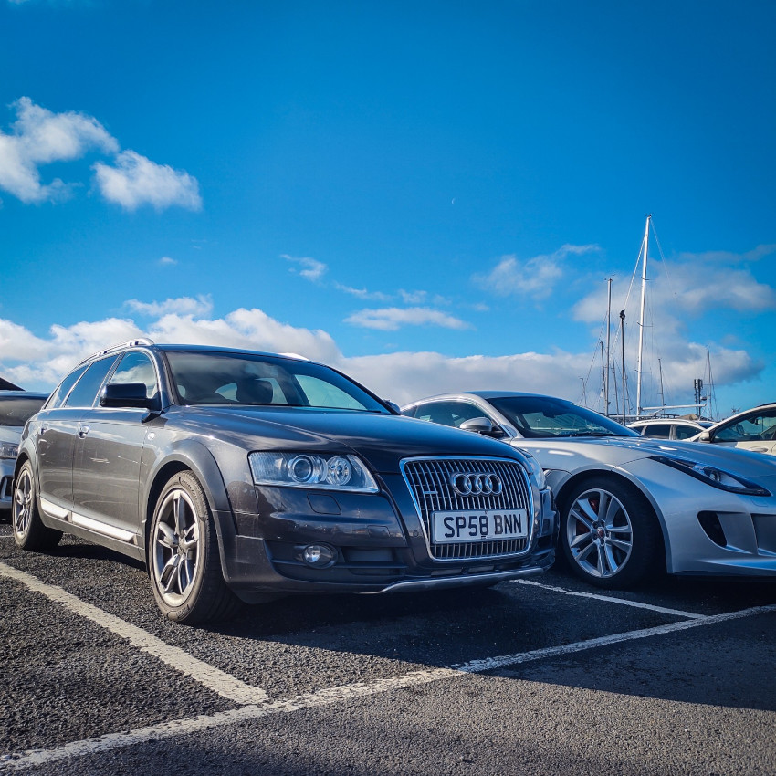
The Lady and Gentlemen Who Lunch in Troon |
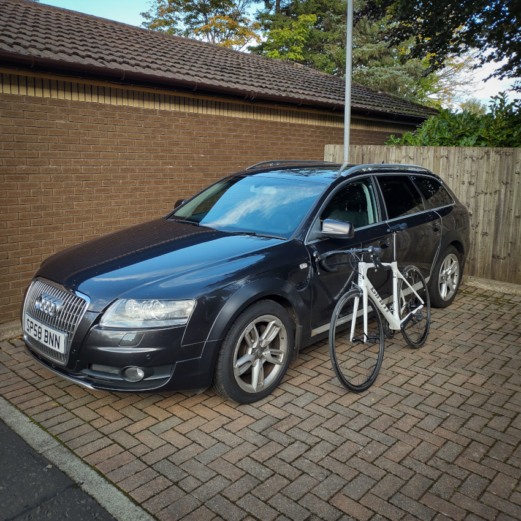
Crockett & RoGeR (My Loves) |

The Docking Bay |
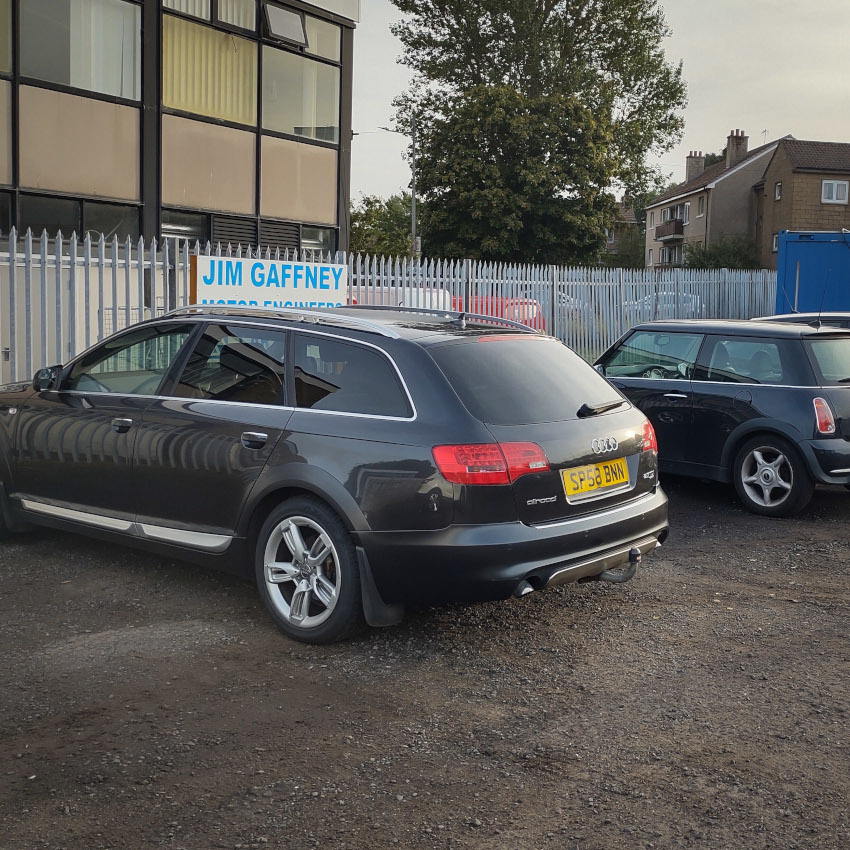
Moment of Truth at Jim Gaffney |
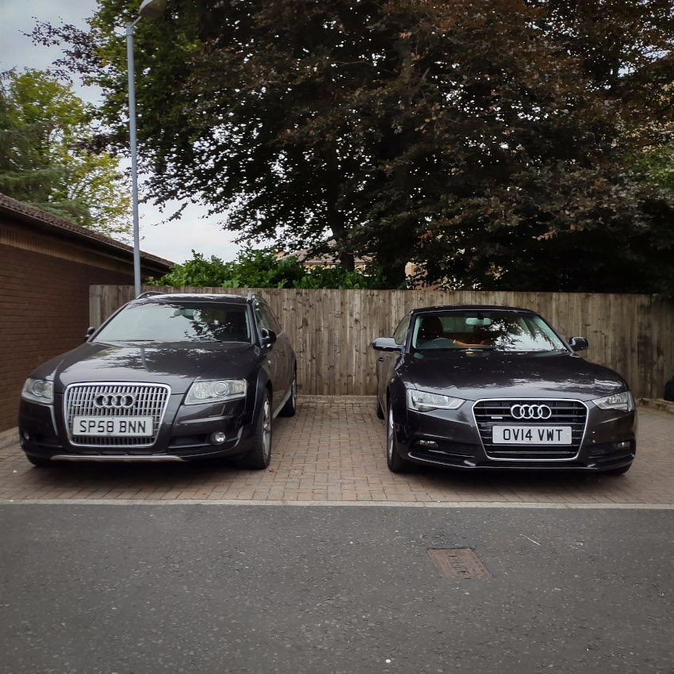
Crockett & His Little Sister |
First A82 Outing |

First A82 Outing |
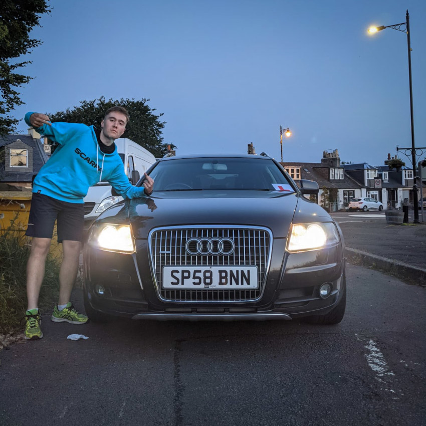
Bam Joy Ride |
This section quotes autoevolution.
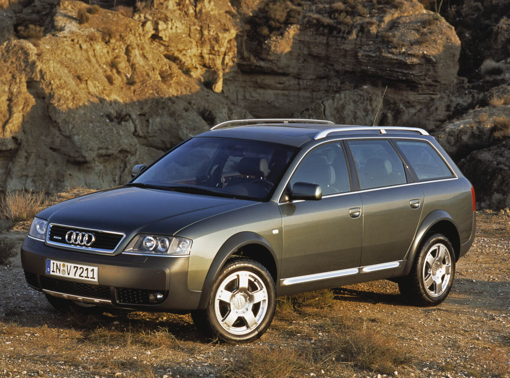C5 allroad (2000-2006) |
After the successful launch of the second generation of the Audi A6 Avant, the German car-maker noticed a trend among its customers toward the all-wheel-drive vehicles that could cope with unpaved roads. The car featured the same rounded shape, but with hard, black, plastic for the bumpers. Thus, the small scratches from bushes were no longer a problem for the paint. A set of new underbody shields was protecting the vehicle from other scratches and hits. A thin foil of hard aluminum was discretely showed at the bottom of the front bumper. Inside, the interior remained unchanged from the standard A6 Avant, but the cargo area received fitted as standard four hooks to keep the storage area clean. No doubt about the interior space, since it had a long wheelbase and a straight roofline that wouldn't bother the rear seat passengers. The drivetrain was, in most cases, a carry-over from the A6 range. There was a different transmission for the V6 diesel version, which could feature a low-range gear at a 1.54:1 ratio. That was not offered to the U.S. market, where only the gasoline V6 twin-turbo was available. A pneumatically adjustable suspension could raise the car and give more ground clearance so the car could tackle some light off-road with a ground clearance of up to 8.2” (208 mm). |
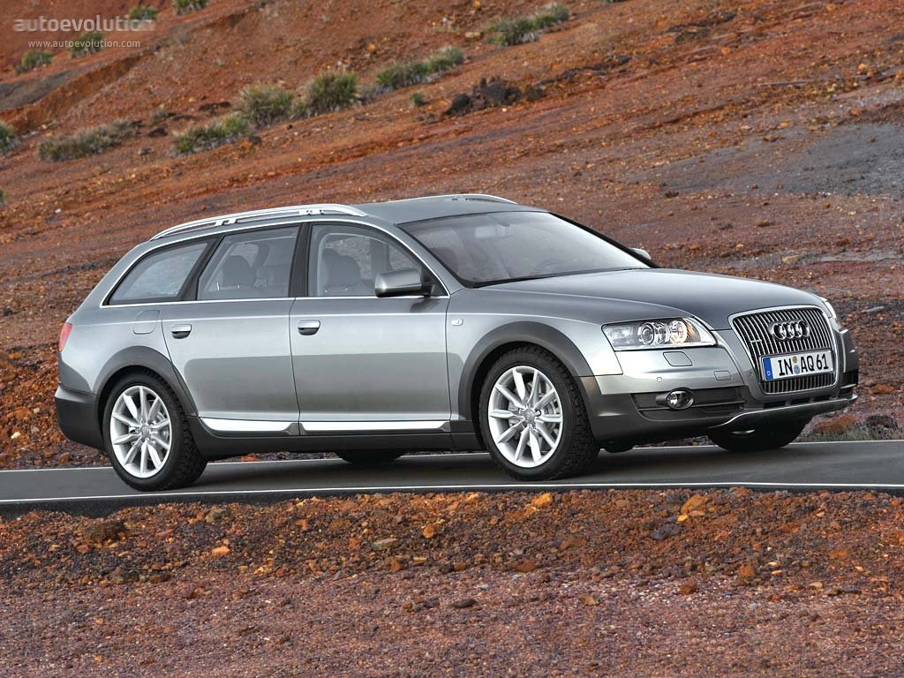C6 allroad (2006-2011) |
At the time of its launch, the A6 Allroad quattro was the only vehicle of its kind on the road. It offered the spacious interior of the big A6 Avant, the all-wheel-drive system, and the luxurious interior of the Audi A6. On top of that, it could go to some unpaved roads where other cars could get stuck. From the outside, the 2006 A6 Allroad kept some of the distinctive off-road elements such as the black plastic protection on the bottom of the bumpers and the side sills. The black plastic overfenders protected the wheel-wells as well. On top of the car, two silver roof-rails were fitted as standard on most of the trim levels. The Allroad quattro offered the same interior room as the station-wagon. The interior was fitted with premium materials such as leather and wood grain on the center console. The aluminum covered the most part of the instrument panel, which was designed around the driver. The high-bolstered seats in the front promised good side support on slopes and while fast cornering. The Allroad quattro was fitted with a choice of four engines: two types of diesel and two gasoline units. For the 2.7-liter diesel and the 4.2-liter gasoline units, the automatic transmission (Tiptronic) was standard, while for the 3.2-liter gasoline and 3.0-liter diesel, the 6-speed manual was standard. |
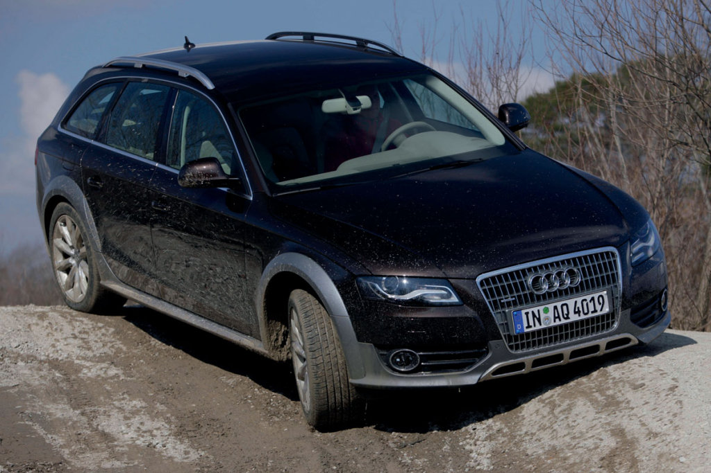
A4 B6 allroad (2009-2011) |
|
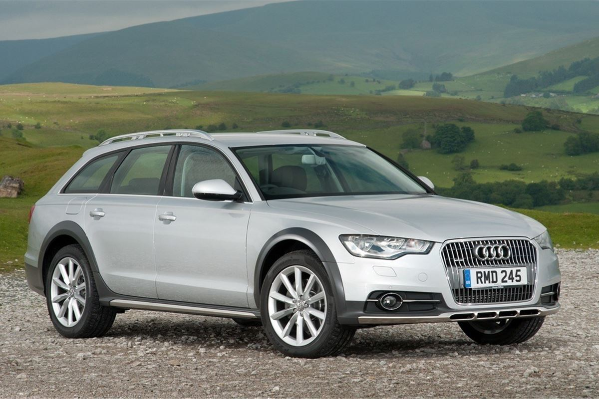A6 C7 allroad (2012-2019) |
While it wasn't a real off-road vehicle, it could cope well with unpaved tracks and even tackle some mild off-road trials. Audi protected its bodywork with a few plastic molds all around and stainless-steel plates underneath the car. It sat low on the road than a regular SUV and even lower at higher speeds thanks to its standard pneumatic suspension. From the outside, the carmaker carried over most of its body panels from the regular A6 Avant, but the bumpers, exaggerated wheel-arches molds and the side sills were unique for it. On top of the vehicle, the carmaker installed roof-rails if someone would need more trunk space. They were more useful to carry bikes and a canoe. Usually, nobody needs more trunk space if it has an A6 Station-wagon. Inside, Audi installed a comfortable cabin fit for five full-grown adults with plenty of legroom for four and limited for the third, middle passenger from the bench. The dashboard sported a clean design with a pop-out infotainment screen that showed maps from Google Earth. Its user could have expanded the trunk thanks to the split-folding rear seats from 565 liters (20 cu-ft) to a whopping 1680 liters (59.3 cu-ft). It formed a completely flat area, good enough to be used as a bedroom. Under the hood, Audi offered two gasoline and one diesel engine. The latter was available in four power outputs ranged between 204 hp and 320 hp. All versions sported an all-wheel-drive system with a locking center differential and hill descent control. |
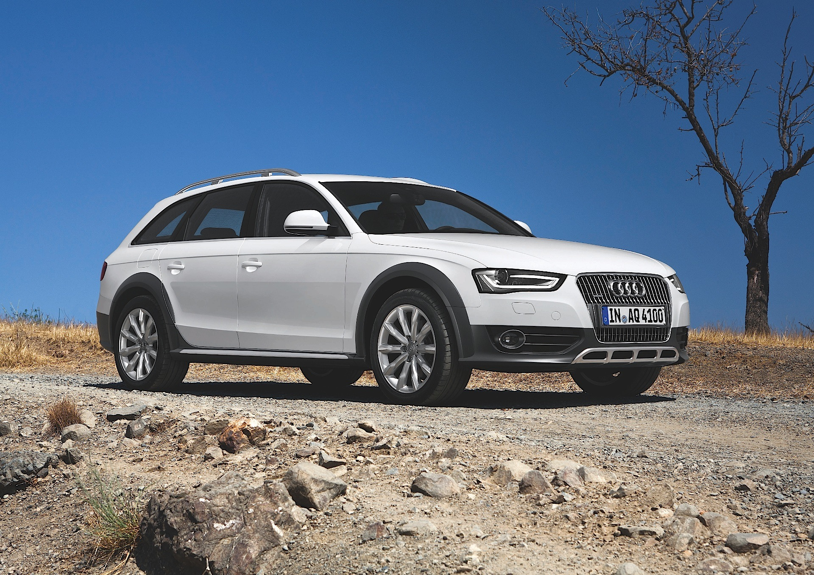
A4 B7 allroad (2012-2016) |
|
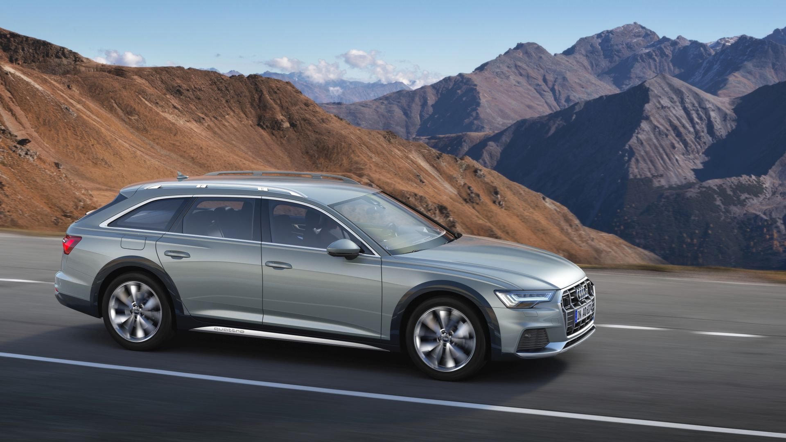A6 C8 allroad (2019-Present) |
The latest A6 allroad quattro now sits up to 45 millimeters (1.8 inches) higher than the A6 Avant thanks to the variable ground clearance made possible by the air springs. The standard ride height is 139 mm (5.5 in), but if the highest ride height is selected and the speed is max. 35 kph (21.7 mph), the body is automatically raised 45 mm (1.8 in). Apart from the special air suspension and AWD, the model also features standard hill descent control and tilt angle assist, which can help you moderately in slightly more extreme off-road situations. On the European markets, the new A6 allroad quattro is available with a 3.0 TDI V6 diesel in three output ratings. The base model comes with 231 horsepower and 500 Nm (368.8 lb-ft) of torque, the middle spec delivers 286 horsepower and 620 Nm (457.3 lb-ft) of torque, while the top model has 349 horsepower and 700 Nm (516.3 lb-ft) of torque. |
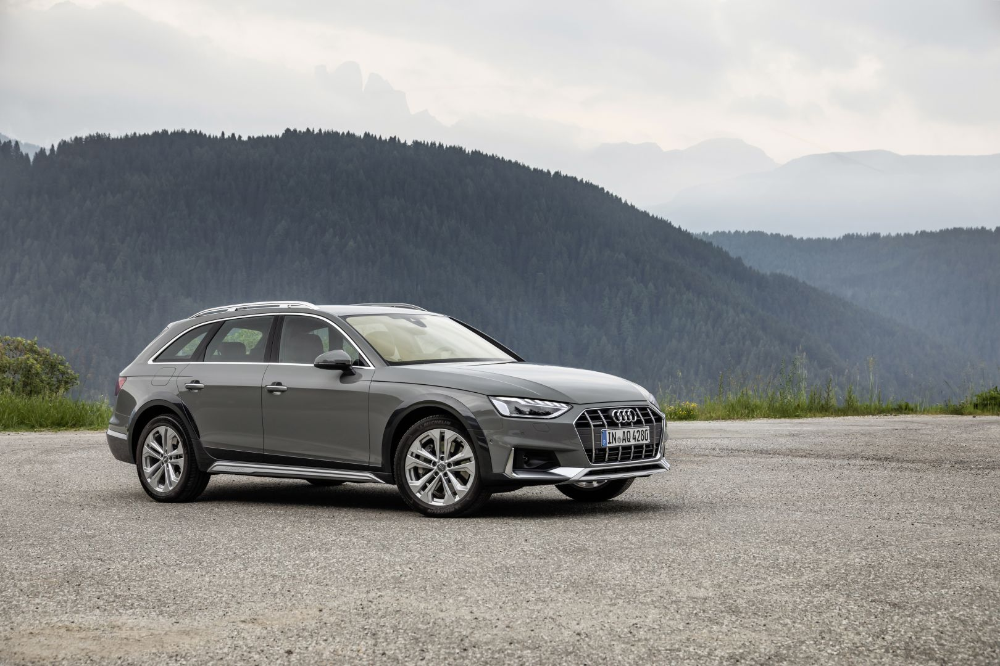
A4 B8 allroad (2019-Present) |
|
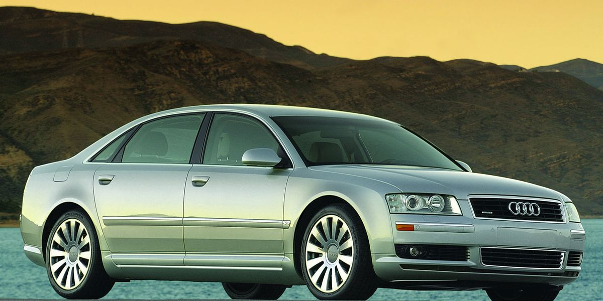A8 D3 (2003-2005) |
The car went through a long and costly development process due to its aluminum bodywork. The car's design was ready in 2000, and the prototype was shown in 2001 at the Frankfurt Motor Show as the "Avantissimo" concept car. But, when it came on the market, it was the lightest car in its segment. Miklós Kovács and Imre Hasanic were the main contributing designers for the car's exterior. They chose one of four full-size prototype models. The rounded shapes and clear-cut headlights design resembled those installed on the A4 but wider. Its main grille was complemented by an additional one placed on the lower side of the bumper, under the license plate area. A set of slim and wide scoops flanked it and sported the fog lights. With a long and curved greenhouse, the A8 featured a low drag coefficient, thanks also to the sloped rear window that ended on the flat, horizontal trunk lid. Like its predecessor, the A8 featured a third window behind the rear doors. Inside, there were four design models made before one was chosen to represent the company's flagship. Despite being an executive vehicle, the carmaker focused on the driver's area and installed all the controls close to the driver's seat. In the back, the A8 offered a choice for a profiled for two or two individual seats, depending on the options. One of the most important features of the car was the MMI (Multi Media Interface), which matched the BMW iDrive system from the 7-Series. It was also the first Audi with DVD-based maps. Under the hood, the carmaker installed a wide engine range which started with a fuel-efficient 3.0-liter turbo-diesel and went up to the fierce 6.0-liter W12 gasoline engine. |
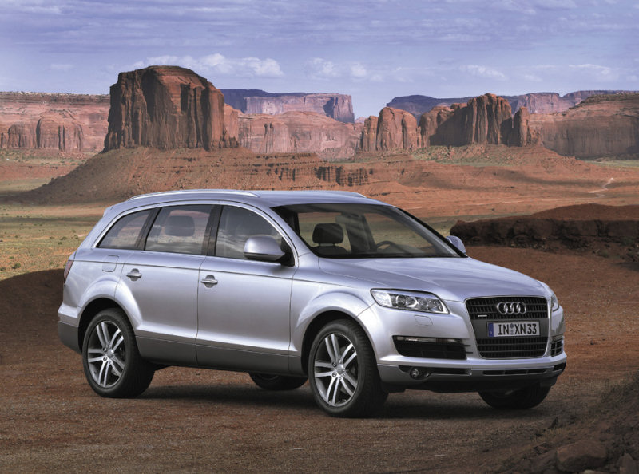Q7 (2006-2009) |
It came late to the big SUV party, but it recovered fast. While the first generation of the Mercedes-Benz ML was revealed in 1997 and the first BMW X5 appeared in 1999, the Q7 waited for a decade after the three-pointed-star SUV to show on the market. And they had the time to do it right. The Q7 impressed with its design, reflected in the broad curve of the roofline and a high body surface in relation to the flat window area. It had a dynamic sweep of the front section and a sloped to the rear roofline. For the inside, the Q7 was available with no less than 28 seating configurations possible in the Q7 including a 7-seat option. The interior comfort featured high-quality materials and great attention. It featured a standard Multi Media Interface for the infotainment system and, as an option, an Audi Music Interface allowed connectivity with an iPod or other MP3 players. At that time, it didn't have a USB port to directly stream the music from it. The technical platform was tested before on the Volkswagen Touareg and the Porsche Cayenne. On the Q7 though it had some special modifications to allow bigger and more powerful engines. For the transmission, it featured a standard 6-speed automatic and an all-wheel-drive quattro system with a Torsen center differential that sent the torque into a 40:60 percent, biased to the rear as in the RS4 model. |